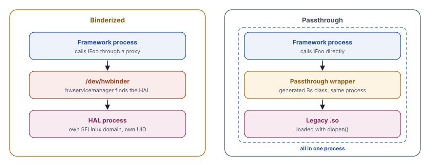
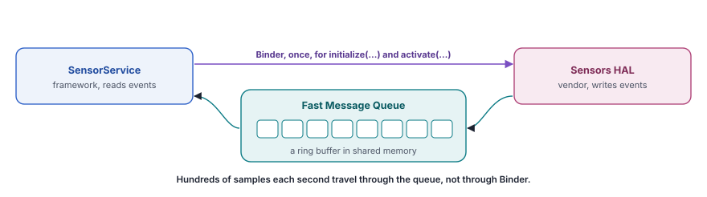
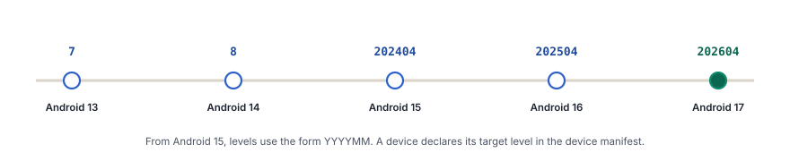
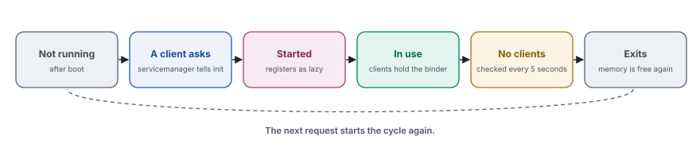

A hardware abstraction layer is a stable contract between an operating system and the code for specific hardware. Each side can then change without breaking the other.
Android runs on thousands of devices with different cameras, sensors, modems and displays. The framework cannot know the details of each chip. The companies that build the chips, on the other hand, do not want to change the framework for every new phone. A hardware abstraction layer (HAL) sits between the two. The framework talks to a fixed interface, and the vendor implements that interface for its own hardware.
This chapter explains how that contract works and how it changed over three generations. It starts with the reasons for the HAL and with the old HALs that were plain shared libraries. It continues with the HAL Interface Definition Language (HIDL) of Project Treble. It ends with today's HALs in AIDL, which use the Binder system from chapter 9. Later sections cover versions, the Vendor Interface (VINTF) that checks both sides, the life of a HAL process and the new HALs of Android 17.
Why Android needs a HAL
The HAL solves two problems at once, a technical one and a practical one.
The technical problem is variety. A camera app on every phone calls the same CameraManager API. Below that API, two phones can have cameras from two vendors. The drivers, registers and image processors differ. The framework needs one way to say "open camera 0 and stream frames" that works on both. The HAL interface defines that way, and each vendor writes the code behind it.
The practical problem is ownership and updates. The Linux kernel uses the GNU General Public License (GPL), which requires vendors to publish the source of their kernel code. The Apache License of the framework does not. Many vendors keep valuable logic, such as the tuning of an image processor, in user space code that they do not publish. The HAL gives that code a clear home between the kernel and the framework. Since Project Treble, it also lets Google update the framework while the vendor code of a phone stays the same.
![Six layers from top to bottom. The app, Kotlin or Java code such as a flashlight app, updated through the Play Store. The framework, system_server, CameraService and the public APIs, updated through a system update. The HAL interface, a stable contract in AIDL such as ICameraProvider, with frozen versions. A line marks this layer as the boundary. The HAL implementation, a vendor process such as the camera provider service, updated through a vendor update. The kernel driver, a device node such as /dev/video0, also updated through a vendor update. The hardware, the camera sensor and its image processor.](../../assets/img/diagrams/hl-stack.svg)
The figure follows a request from an app to the hardware. Everything above the HAL interface comes with the system image. Everything below it belongs to the vendor. The interface itself is frozen, so that a new system and an old vendor image still understand each other.
A HAL works like the standard socket in a wall. Any appliance with the right plug works with it, whoever made the appliance and whoever built the power station. The socket standard changes very slowly, and a new standard keeps the old pins working. Appliance makers and power companies can then improve their products without asking each other.
Three generations
Android changed the form of its HALs twice. Each step fixed a weakness of the step before, and all three forms still exist on some devices today.
![Three generations from left to right. The legacy HAL from Android 1.0 in 2008, a shared library loaded with dlopen into the framework process, with no IPC and no versions that the system checks. It is still present for a few modules. HIDL from Android 8.0 in 2017, with separate HAL processes on /dev/hwbinder or passthrough in the client, and versions such as 2.4 per package. It is deprecated and kept for old vendors. The AIDL HAL from Android 11 in 2020, with separate HAL processes on /dev/binder and stable AIDL, one language for framework services and HALs. It is the standard for all new HALs.](../../assets/img/diagrams/hl-generations.svg)
| Generation | Since | How the framework reaches it | Versions | Status today |
|---|---|---|---|---|
| Legacy HAL | Android 1.0 | Loads a shared library into its own process with dlopen() | A number in a struct, not checked | Kept for a few modules |
| HIDL | Android 8.0 | Binder calls on /dev/hwbinder, or passthrough in the same process | package@major.minor | Deprecated since Android 10 |
| AIDL HAL | Android 11 | Binder calls on /dev/binder | Frozen integer versions | The standard for new HALs |
The legacy HAL
The first HALs were shared libraries in C. The framework loaded the library of a module into its own process and called functions through a table of pointers. The headers that define this contract are in hardware/libhardware/include/hardware/, and the loader is in hardware/libhardware/hardware.c.
Two structures carry the whole design. hw_module_t describes a module, such as the lights module. hw_device_t describes an opened device of that module. Every HAL library exports one global variable with the name HMI, short for hardware module information. This variable is a hw_module_t, often embedded at the start of a larger structure of the specific module.
typedef struct hw_module_t {
uint32_t tag; // must be HARDWARE_MODULE_TAG
uint16_t module_api_version;
uint16_t hal_api_version;
const char *id; // such as "lights"
const char *name;
const char *author;
struct hw_module_methods_t* methods; // contains open()
void* dso; // the handle from dlopen()
uint64_t reserved[32-7]; // room for future fields
} hw_module_t;
#define HAL_MODULE_INFO_SYM HMI
#define HAL_MODULE_INFO_SYM_AS_STR "HMI"To use a module, framework code calls hw_get_module() with the identifier of the module. The function searches for a matching library, loads it with dlopen() and looks up the symbol HMI with dlsym(). The caller then calls open() through methods and receives a device structure with the function pointers of that module.
![hw_get_module for lights looks for a file name in this order. First the property ro.hardware.lights, which gives lights dot value dot so. Then ro.hardware, for example lights.ranchu.so on the emulator. Then ro.product.board, ro.board.platform and ro.arch. If no property matched, lights.default.so. For each name, it checks the folders /odm/lib64/hw, /vendor/lib64/hw and /system/lib64/hw. The first file that exists wins. Then dlopen loads it, and dlsym of HMI finds its module record. On 32-bit devices, lib/hw replaces lib64/hw.](../../assets/img/diagrams/hl-legacy-load.svg)
The file name encodes the module and the hardware variant, such as lights.ranchu.so on the emulator, whose ro.hardware property is ranchu. The loader tries several properties in a fixed order and falls back to lights.default.so. This lets one system image carry implementations for several boards and pick the right one at runtime.
Why the legacy HAL was not enough
- No isolation. The vendor library ran inside a framework process, with all of its rights. A crash in the library crashed the framework process, and a security bug in it exposed that process.
- No real versions. The version fields were hints. Nothing checked at build time or at boot that a library matched the framework.
- No discovery. The framework only tried to load a library and saw whether it existed.
- No separate updates. The framework and the library shared one address space and one set of headers. A new framework often needed a rebuilt vendor library.
The last point mattered most. Every Android update required new vendor code from every chip maker, and many phones never received updates. Project Treble set out to fix this, and HIDL was its tool.
HIDL and Project Treble
Project Treble arrived with Android 8.0. It split the software of a phone into two sides. Google and the device maker update the system side, and the chip maker owns the vendor side. The two sides talk only through declared, versioned interfaces. A new system image can then run on an old vendor image, as long as the interfaces still match.
![Left, the system side with /system, /system_ext and /product, holding the framework and system apps. It has a framework manifest, which says what the system offers, and a framework compatibility matrix, which says what the system needs. Right, the vendor side with /vendor and /odm, holding HAL services and firmware. It has a device manifest, which says what the vendor offers, and a device compatibility matrix, which says what the vendor needs. Arrows cross between them. Each side checks the offer of the other side against its own needs, at build time, at update time and at boot.](../../assets/img/diagrams/hl-treble.svg)
HIDL was the language for these interfaces. Its files end in .hal and live in hardware/interfaces/, such as hardware/interfaces/light/2.0/ILight.hal. A HIDL package carries its version in its name, such as android.hardware.light@2.0. A minor version, such as 2.1, extends the interface of 2.0. A major version starts a new package.
package android.hardware.light@2.0;
interface ILight {
setLight(Type type, LightState state) generates (Status status);
getSupportedTypes() generates (vec<Type> types);
};The keyword generates names the values that a method returns. The tool hidl-gen turned such files into C++ and Java code, much as the AIDL compiler does.
Binderized and passthrough
HIDL offered two ways to run a HAL. In binderized mode, the HAL runs in its own process and the framework calls it through Binder on /dev/hwbinder. In passthrough mode, the framework loads the HAL library into its own process, like a legacy HAL, but calls it through the HIDL interface.

Binderized mode was the goal. A HAL in its own process gets its own SELinux domain and UID, so a bug in it stays inside that process. Passthrough mode was a bridge for old libraries. It also served a few HALs where a process switch costs too much. An example is the graphics mapper, which works on memory buffers inside the caller. The VINTF manifest of the device declares the mode of each HIDL HAL with <transport>hwbinder</transport> or <transport>passthrough</transport>.
HIDL services register with hwservicemanager, the service manager of /dev/hwbinder. Their full names include the version, such as android.hardware.light@2.0::ILight/default. The shell tool lshal lists them.
Why HIDL was replaced
HIDL solved the problem of separate updates, but it doubled the work of the platform. Android now had two interface languages, two code generators, two Binder devices and two service managers. Developers had to learn a second syntax, and HIDL never gained Rust support. Meanwhile, AIDL gained the stability features of HIDL.
Android 10 introduced stable AIDL, and Android 11 allowed HALs in AIDL. AOSP marks HIDL as deprecated since Android 10 and accepts no new HIDL interfaces. Old HIDL HALs remain, because a vendor image that froze a HIDL interface years ago still needs it. The HIDL runtime in system/libhidl and hwservicemanager therefore stay as a compatibility layer. A device with only AIDL HALs does not run a real hwservicemanager at all.
HALs in AIDL
An AIDL HAL is a normal Binder service with a stronger promise. It uses the same AIDL language, the same servicemanager and the same tools as the framework services of chapter 9. Three additions turn it into a HAL. Every type carries @VintfStability. The interface is frozen at numbered versions. The device declares the HAL in its VINTF manifest.
The source of the interfaces in AOSP is spread over three folders, depending on who provides the interface. hardware/interfaces/ holds interfaces that hardware provides, such as lights, sensors and the camera. frameworks/hardware/interfaces/ holds interfaces that the framework provides to hardware. system/hardware/interfaces/ holds low-level interfaces of the system. Each interface sits in an aidl/ folder next to the old HIDL versions, if any exist.
![The files of one AIDL HAL, here the lights HAL. On the interface side, shared by framework and vendor, ILights.aidl is the interface with @VintfStability. The aidl_interface module in Android.bp sets stability vintf and lists frozen versions. The build generates libraries such as android.hardware.light-V2-ndk, and also rust and java variants. The service binary links them. On the vendor side, the service binary in vendor/bin/hw, the init script lights-default.rc that tells init how to start it, the VINTF fragment lights-default.xml that declares ILights/default, and the SELinux policy with the domain, the service label and the binder rules.](../../assets/img/diagrams/hl-anatomy.svg)
The lights HAL, step by step
The lights HAL is one of the smallest AIDL HALs, which makes it a good model. It lets the framework set the color and brightness of logical lights. Examples are the backlight of the screen, the notification LED and the light of the keyboard. The default implementation in AOSP is written in Rust.
package android.hardware.light;
import android.hardware.light.HwLight;
import android.hardware.light.HwLightState;
@VintfStability
interface ILights {
// Set the light with this id to the given state.
void setLightState(in int id, in HwLightState state);
// List the lights that this device supports.
HwLight[] getLights();
}The interface looks like any framework interface. The only visible difference is @VintfStability. The parcelables HwLight and HwLightState carry the same annotation, because every type of a VINTF-stable interface must be stable too. The compiler rejects the interface otherwise.
The build module turns the interface into libraries. It sets the stability, enables the backends and lists the frozen versions.
aidl_interface {
name: "android.hardware.light",
vendor_available: true,
srcs: ["android/hardware/light/*.aidl"],
stability: "vintf",
frozen: true,
backend: {
java: { sdk_version: "module_current" },
rust: { enabled: true },
},
versions_with_info: [
{ version: "1", imports: [] },
{ version: "2", imports: [] },
// ... one entry for each frozen version
],
}vendor_available lets vendor code link the generated libraries. frozen: true tells the build that the sources must match the newest frozen version. The libraries follow the pattern NAME-VVERSION-BACKEND, such as android.hardware.light-V2-ndk for C++ code on the vendor side or android.hardware.light-V2-rust for Rust.
The service itself is a small program. It creates the implementation, wraps it in the generated stub, registers it under its instance name and joins the thread pool.
fn main() {
// ... set up logging
binder::ProcessState::set_thread_pool_max_thread_count(0);
let lights_service = LightsService::default();
let lights_service_binder =
BnLights::new_binder(lights_service, BinderFeatures::default());
let service_name = format!("{}/default", LightsService::get_descriptor());
binder::add_service(&service_name, lights_service_binder.as_binder())
.expect("Failed to register service");
binder::ProcessState::join_thread_pool()
}The instance name joins the descriptor of the interface and an instance, so the full name is android.hardware.light.ILights/default. A device with two modules of the same kind uses two instances, such as IModule/default and IModule/bluetooth for audio. The thread pool size of 0 means that the main thread alone handles the calls, which is enough for a HAL with little traffic.
Two small files on the vendor side complete the HAL. An init script starts the process, and a VINTF fragment declares the interface.
service vendor.light-default /vendor/bin/hw/android.hardware.lights-service.example
class hal
user nobody
group nobody
shutdown critical<manifest version="1.0" type="device">
<hal format="aidl">
<name>android.hardware.light</name>
<version>2</version>
<fqname>ILights/default</fqname>
</hal>
</manifest>The class hal lets init start all HALs together during boot, after the core services. The user nobody gives the process no extra rights, because a lights HAL only needs access to a few files under /sys, which SELinux grants. The fragment tells the system that this device provides version 2 of ILights under the instance default. The build module of the service names both files, with init_rc and vintf_fragments, so that they land in the right places of the vendor image.
From start to first call
![A sequence diagram with the lanes init, HAL process, servicemanager, Client. Step 1, init to HAL process, start from the .rc file, class hal. Step 2, HAL process to servicemanager, AServiceManager_addService(...), name IFoo/default. Step 3, servicemanager to servicemanager, is the name in the VINTF manifest?, and can this domain add it?. Step 4, servicemanager to HAL process, STATUS_OK, or an error if not declared. Step 5, HAL process to HAL process, ABinderProcess_joinThreadPool(), wait for calls. Step 6, Client to servicemanager, AServiceManager_waitForService(...). Step 7, servicemanager to Client, binder of the HAL. Step 8, Client to HAL process, setLightState(...), a normal Binder call.](../../assets/img/diagrams/hl-register.svg)
The order in the figure shows why the VINTF fragment matters. When the HAL calls addService(), the service manager sees a VINTF-stable binder and checks that the device manifest declares the name. A HAL that is missing from the manifest fails to register, even when its code is correct. The service manager also checks with SELinux that the domain of the HAL can add this name. Only then does the client receive the binder.
A client in the framework usually asks with waitForDeclaredService() or, in the NDK, AServiceManager_waitForService(). Before it waits, the declared variant checks the manifest. If the device does not declare the HAL, the client gets null at once. It can then turn the feature off and does not wait for a service that never comes.
Which backend for which side
AOSP is strict about the code on the vendor side. Native vendor code must use the NDK backend or the Rust backend. The NDK backend links to libbinder_ndk, and the Rust backend builds on it. Only code on the system side can use libbinder directly, through the CPP backend. The two sides update separately, and only libbinder_ndk keeps a stable interface across releases. For new interfaces, AOSP even advises to switch the CPP backend off, so that nobody uses it on the vendor side by mistake.
Callbacks and fast message queues
Some HALs need to push data to the framework. The health HAL, for example, reports changes of the battery. The framework passes a callback object in a normal call, and the HAL keeps it and calls it later. The callback is just another AIDL interface, usually with one-way methods, so that a slow framework cannot block the HAL.
Other HALs move large amounts of data, such as samples from the motion sensors, often hundreds of them each second. A Binder call for every sample costs too much. These HALs use Binder only to set up a Fast Message Queue (FMQ), a ring buffer in shared memory. After the setup, the HAL writes samples into the buffer and the framework reads them, without any Binder call.

The library system/libfmq/ provides the queues. An AIDL method receives the description of a queue as an MQDescriptor, which carries the shared memory and its layout. Both sides then map the same memory. A small word in the shared memory, the event flag, wakes a reader that waits for data. The reader then does not need to poll.
Versions and freezing
A HAL interface lives for many years. A vendor image for one version must keep working when the system image moves on. A new vendor image must work with the system that it ships with. AIDL handles this with frozen integer versions.
![The folder aidl_api for android.hardware.example holds snapshot 1, frozen, with IExample.aidl and Info.aidl. Snapshot 2, frozen, adds newMethod to IExample and an extra field to Info. The folder current is in development, matches the source files and stays until the next freeze. Allowed between versions are adding a method at the end, adding a field at the end of a parcelable, adding a constant or an enum value and adding a field at the end of a union. Never allowed are removing or renaming a method or field, changing the order of methods, changing a type or a direction and editing a frozen snapshot.](../../assets/img/diagrams/hl-versions.svg)
The build system stores each frozen version as a complete copy of the interface files in aidl_api/NAME/VERSION/, together with a hash. The folder current/ holds the state in development. Two build targets manage the folders. m NAME-update-api refreshes current/ from the sources. m NAME-freeze-api copies them into the next numbered folder, which is then immutable. Every frozen file starts with a warning that nobody can edit it.
Before the build accepts a new version, it compares it with the last frozen one. A new version can add methods and fields at the end, and it can add constants and enum values. Anything else changes the meaning of old data or old transaction codes, so the build fails. A change that breaks compatibility needs a new package with a new major name, such as android.hardware.bluetooth2.
New clients, old servers
A framework that knows version 3 can meet a vendor HAL that implements only version 2. Before it calls a method that version 3 added, the client asks the server for its version with getInterfaceVersion(). If the client calls such a method anyway, the server answers with UNKNOWN_TRANSACTION. In Java, that answer becomes a RemoteException. In the NDK, it becomes STATUS_UNKNOWN_TRANSACTION. Each new feature in a HAL therefore comes with a fallback in the framework for devices with an older version.
The Vendor Test Suite (VTS) checks the promise from the other side. Every VINTF-stable interface on a device must use a frozen, released version. No device then ships an interface that is still in development.
VINTF, the vendor interface object
Freezing keeps one interface stable. The Vendor Interface (VINTF) object checks the whole device. It answers two questions. Does the vendor side provide every HAL that this system needs? Does the system provide everything that the vendor side needs? The library system/libvintf/ builds the answers from four XML documents.
| Document | Written by | Says |
|---|---|---|
| Device manifest | The vendor | Which HALs the vendor side provides, with versions and instances |
| Framework compatibility matrix | Google, for each Android release | Which HALs the system needs, with the versions that it accepts |
| Framework manifest | The system side | Which services the system provides to the vendor |
| Device compatibility matrix | The vendor | What the vendor side needs from the system |
A manifest is an offer, and a matrix is a demand. The device is compatible when each offer meets the demand of the other side. A matrix can accept a range of versions, such as <version>1-3</version>, so that a newer system still works with an older vendor HAL. An entry can also be marked optional="true", when the system can work without that HAL.
<compatibility-matrix version="1.0" type="framework" level="202504">
<hal format="aidl">
<name>android.hardware.audio.core</name>
<version>1-3</version>
<interface>
<name>IModule</name>
<instance>default</instance>
<instance>bluetooth</instance>
<instance>usb</instance>
</interface>
</hal>
<!-- many more HALs -->
</compatibility-matrix>Where the files live
The device manifest is not one file. The system assembles it from several sources at runtime. The main vendor manifest is /vendor/etc/vintf/manifest.xml, and fragments from vintf_fragments in the build add one entry for each HAL. The ODM partition can add its own manifest under /odm/etc/vintf/, and a device can pick a manifest for its SKU, a product variant, through a property. Vendor APEX modules bring fragments in /apex/NAME/etc/vintf/. A later manifest can replace an entry of an earlier one only when the entry says override="true".
The framework matrices come from hardware/interfaces/compatibility_matrices/. The system image holds one matrix for each level that it still supports, and the device chooses one through its target level.
Levels of the framework matrix
Each Android release adds a framework compatibility matrix (FCM) with a level number. A device declares a target FCM level in its manifest, normally the level of the Android version that it launched with. The system then applies the matrix of that level. It asks an old device only for the HALs that existed at the launch of that device.

Up to Android 14, the levels were small integers, with 7 for Android 13 and 8 for Android 14. From Android 15, a level names the year and month of the release cycle, such as 202404 for Android 15 and 202604 for Android 17. Each source tree also stages the matrix of the next release, so that HAL owners can prepare their changes early.
When the checks run
- At build time. The tools
assemble_vintfandcheck_vintfbuild the manifests and compare them with the matrices. A missing HAL or a wrong version fails the build. - At update time. An over-the-air (OTA) update for one side carries information that lets the device check it against the other side before the update applies.
- At boot.
VintfObject::checkCompatibility()compares the running device with the matrices, including the kernel version, kernel options and the SELinux policy version. - At registration. The service manager refuses any VINTF-stable service that the manifest does not declare, as the earlier section showed.
- In tests. VTS checks that every declared HAL runs, has the declared version and offers the declared instances.
Together, these checks turn the promise of Treble into something a machine can verify. A device maker cannot ship a system that expects a HAL which the vendor image lacks, and a HAL cannot quietly appear without a declaration.
Build a small HAL of your own
The quickest way to understand a HAL is to build a tiny one. The example below defines a greeting HAL with three methods, implements it in C++ with the NDK backend and calls it from a small client. It needs an AOSP tree and an emulator or a development device that you can flash. The folder vendor/example/ keeps it apart from the real interfaces.
Step 1. Define the interface
package vendor.example.greeting;
import vendor.example.greeting.GreetingResponse;
@VintfStability
interface IGreeting {
GreetingResponse greet();
GreetingResponse greetByName(in String name);
int getGreetingCount();
}package vendor.example.greeting;
@VintfStability
parcelable GreetingResponse {
String message;
long timestampMs;
}Both files carry @VintfStability. The package name starts with vendor., which marks the interface as a private contract of the vendor, not one that Google defines for every device.
Step 2. Describe the build module
aidl_interface {
name: "vendor.example.greeting",
vendor_available: true,
srcs: ["vendor/example/greeting/*.aidl"],
stability: "vintf",
backend: {
cpp: { enabled: false },
ndk: { enabled: true },
java: { enabled: false },
},
}Only the NDK backend is enabled, because only vendor C++ code uses this interface. The module has no frozen versions yet. Until the first freeze, the build treats the sources as version 1 in development.
Step 3. Implement the methods
#pragma once
#include <aidl/vendor/example/greeting/BnGreeting.h>
#include <atomic>
#include <chrono>
namespace aidl::vendor::example::greeting {
class Greeting : public BnGreeting {
public:
ndk::ScopedAStatus greet(GreetingResponse* out) override {
*out = make("Hello from the greeting HAL");
return ndk::ScopedAStatus::ok();
}
ndk::ScopedAStatus greetByName(const std::string& name,
GreetingResponse* out) override {
if (name.empty()) {
return ndk::ScopedAStatus::fromServiceSpecificError(1);
}
*out = make("Hello, " + name);
return ndk::ScopedAStatus::ok();
}
ndk::ScopedAStatus getGreetingCount(int32_t* out) override {
*out = mCount.load();
return ndk::ScopedAStatus::ok();
}
private:
GreetingResponse make(const std::string& text) {
GreetingResponse r;
r.message = text;
r.timestampMs = std::chrono::duration_cast<std::chrono::milliseconds>(
std::chrono::system_clock::now().time_since_epoch()).count();
mCount++;
return r;
}
std::atomic<int32_t> mCount{0};
};
} // namespace aidl::vendor::example::greetingThe class derives from the generated stub BnGreeting. Each method returns a status and writes its result through a pointer, which is the pattern of the NDK backend. An empty name returns a service-specific error with the code 1, which the client receives as such and can handle.
Step 4. Register the service
#include <android/binder_manager.h>
#include <android/binder_process.h>
#include <android-base/logging.h>
#include "Greeting.h"
using aidl::vendor::example::greeting::Greeting;
int main() {
ABinderProcess_setThreadPoolMaxThreadCount(0);
auto service = ndk::SharedRefBase::make<Greeting>();
const std::string name = std::string(Greeting::descriptor) + "/default";
CHECK_EQ(AServiceManager_addService(service->asBinder().get(), name.c_str()),
STATUS_OK);
ABinderProcess_joinThreadPool();
return EXIT_FAILURE; // joinThreadPool() does not return
}Step 5. Add the vendor files
cc_binary {
name: "vendor.example.greeting-service",
relative_install_path: "hw",
vendor: true,
init_rc: ["greeting.rc"],
vintf_fragments: ["greeting.xml"],
srcs: ["main.cpp"],
shared_libs: ["libbase", "libbinder_ndk"],
static_libs: ["vendor.example.greeting-V1-ndk"],
}service vendor.greeting /vendor/bin/hw/vendor.example.greeting-service
class hal
user nobody
group nobody<manifest version="1.0" type="device">
<hal format="aidl">
<name>vendor.example.greeting</name>
<version>1</version>
<fqname>IGreeting/default</fqname>
</hal>
</manifest>Add vendor.example.greeting-service to PRODUCT_PACKAGES of your product, so that the image includes it. A vendor HAL is not part of any framework matrix from Google. The device therefore adds its own small matrix through DEVICE_FRAMEWORK_COMPATIBILITY_MATRIX_FILE, so that the VINTF check at build time accepts the new entry.
Step 6. Give it an SELinux domain
The new service needs a domain, a label for its executable and a label for its service name. Without them, init does not start it or the service manager does not register it.
type hal_greeting_default, domain;
type hal_greeting_default_exec, exec_type, vendor_file_type, file_type;
init_daemon_domain(hal_greeting_default)
type hal_greeting_service, hal_service_type, service_manager_type;
add_service(hal_greeting_default, hal_greeting_service)
binder_use(hal_greeting_default)# file_contexts
/vendor/bin/hw/vendor\.example\.greeting-service u:object_r:hal_greeting_default_exec:s0
# service_contexts
vendor.example.greeting.IGreeting/default u:object_r:hal_greeting_service:s0A client domain then needs allow CLIENT hal_greeting_service:service_manager find; and binder_call(CLIENT, hal_greeting_default). For a quick test on an emulator, run the client as root in a permissive build first. Read the avc: denied messages and then write exact rules.
Step 7. Call it from a client
#include <aidl/vendor/example/greeting/IGreeting.h>
#include <android/binder_manager.h>
#include <iostream>
using aidl::vendor::example::greeting::IGreeting;
using aidl::vendor::example::greeting::GreetingResponse;
int main() {
const std::string name = std::string(IGreeting::descriptor) + "/default";
std::shared_ptr<IGreeting> hal = IGreeting::fromBinder(
ndk::SpAIBinder(AServiceManager_waitForService(name.c_str())));
GreetingResponse r;
if (hal->greetByName("Asha", &r).isOk()) {
std::cout << r.message << std::endl;
}
int32_t count = 0;
hal->getGreetingCount(&count);
std::cout << "Greetings so far " << count << std::endl;
}After you build and flash, adb shell service check vendor.example.greeting.IGreeting/default confirms the registration. The client then prints the greeting. If the service is missing, check three things in this order. The VINTF fragment must use exactly the same name. The SELinux labels must match the paths. The process must appear in adb shell ps -AZ.
Step 8. Freeze the first version
Before the HAL ships, freeze it with m vendor.example.greeting-freeze-api. The build copies the interface into aidl_api/vendor.example.greeting/1/ and adds versions_with_info to the module. From now on, every change must be a compatible addition, and the next freeze creates version 2. When you add a method later, also raise the version in the VINTF fragment. Clients then see the new version on the devices that have it.
The life of a HAL process
Most HALs start during boot and run until shutdown. init starts every service of the class hal after the core services, as chapter 4 described. A few HALs that the boot itself needs, such as the HALs for keys and the boot control, belong to the class early_hal and start sooner.
A HAL can crash like any other process. When that happens, the driver sends death notifications to all clients, the service manager removes the registration, and init restarts the process according to its .rc file. A well-written client links to the death of the HAL, waits for the new instance with waitForService() and connects again. For HALs that the system cannot live without, the .rc file can mark the service as critical, so that repeated crashes reboot the device.
Lazy HALs
Some HALs are needed rarely, such as the HAL for a fingerprint sensor during enrollment, or a HAL for a test feature. Running them all the time wastes memory. A lazy HAL starts only when a client asks for it and exits when no client uses it any more.

A lazy HAL registers with AServiceManager_registerLazyService() in the NDK, or with LazyServiceRegistrar in libbinder. Its .rc file marks the service as disabled, so that init does not start it at boot, and names the interface that it serves.
service vendor.example-lazy /vendor/bin/hw/android.hardware.example-service.lazy
interface aidl android.hardware.example.IExample/default
class hal
user nobody
group nobody
disabled
oneshotWhen a client asks for android.hardware.example.IExample/default, the service manager sees that the service is declared but not running. It sets a control property that asks init to start the service that serves this interface. Every few seconds, the service manager checks whether lazy services still have clients. When the count drops to zero, it tells the service, which unregisters and exits. oneshot stops init from restarting it at once.
SELinux for a HAL
A HAL process runs in its own SELinux domain, such as hal_light_default. The policy decides four things about it. Which domain can register the service name, which domains can find it and call it and which device files it can open. AOSP defines attributes for each HAL in system/sepolicy/, so that a vendor policy needs only a few lines.
# The domain and its executable
type hal_light_default, domain;
hal_server_domain(hal_light_default, hal_light)
type hal_light_default_exec, exec_type, vendor_file_type, file_type;
init_daemon_domain(hal_light_default)
# Access to the hardware, here the LED files in sysfs
allow hal_light_default sysfs_leds:dir search;
allow hal_light_default sysfs_leds:file rw_file_perms;The macro hal_server_domain() marks the domain as a server of the lights HAL. The shared policy of AOSP then lets it add the lights service. It also lets clients of the lights HAL, such as system_server, find it and call it. init_daemon_domain() makes init switch into this domain when it starts the executable. A missing rule does not always crash the HAL. It can also leave a registered service that no client can find, which shows up only as an avc: denied message in the kernel log.
Android 17 adds new HAL packages, all in AIDL and none in HIDL. They show where the platform moves.
- Motion context HAL.
android.hardware.motioncontextlets a low-power processor classify motion such as walking or driving. It delivers events without waking the main processor. - NPU scheduling HAL.
android.hardware.npulets the framework tell a neural processing unit which apps have priority. It is not an inference interface. Its libraries ship in an updatable APEX module, so that the contract can update outside the system image. - Trusted HALs. The family under
hardware/interfaces/security/see/defines HALs whose implementation runs inside the TEE. Only protected virtual machines can reach them. Examples are interfaces for keys, device state and storage. - HALs only for virtual machines. The VINTF manifest can mark a HAL as reachable only from a virtual machine, so that the host system never sees it.
- A new matrix level. Devices that launch with Android 17 target FCM level 202604, and the source tree already stages level 202704 for the next release.
HALs run closest to the hardware and often hold rights that no app has, such as access to device nodes. They are a frequent target, and their design limits the damage of a bug.
- One process, one HAL, small rights. A binderized HAL runs in its own process with its own domain and often as the user
nobody. A bug in the camera HAL then cannot read the files of the audio HAL. The legacy model, with vendor code insidesystem_server, offered no such wall. - Treat every call as untrusted. A HAL receives data from the framework, and through the framework often from apps. Check every index, length and enum value before you use it with a driver.
- Keep the find rules narrow. Apps must never call a HAL directly. SELinux neverallow rules in AOSP stop app domains from finding most HAL services, and vendor policy must not open that door.
- Declare everything. The VINTF check at registration stops an unknown service from posing as a HAL under a declared name, as long as the manifest stays accurate.
- Prefer Rust for new HALs. Many HAL bugs are memory errors in C and C++. The Rust backend of AIDL removes most of this class of bugs, and AOSP writes many new reference HALs in Rust.
- A HAL is the contract between the framework and vendor code, so that each side can update without the other.
- Legacy HALs were shared libraries inside framework processes. HIDL moved HALs into their own processes. AIDL HALs keep that model and reuse the AIDL of the framework.
- An AIDL HAL needs
@VintfStability, frozen versions, an entry in the VINTF manifest and an SELinux domain. - Frozen versions only grow at the end. New clients check the version of old servers before they call new methods.
- VINTF compares what each side offers with what the other side needs, at build time, at update time, at boot and at registration.
- Vendor code uses the NDK or Rust backend, because only
libbinder_ndkhas a stable interface across releases.
For the curious, source files Optional
| Path | Content |
|---|---|
hardware/libhardware/ | The legacy HAL loader and its headers, such as hardware.h and hardware.c |
hardware/interfaces/ | HIDL and AIDL interfaces that hardware provides, with default implementations and VTS tests |
hardware/interfaces/compatibility_matrices/ | The framework compatibility matrices for each level |
system/libvintf/ | The VINTF library, assemble_vintf, check_vintf and the on-device vintf tool |
system/libhidl/, system/hwservicemanager/ | The HIDL runtime and its service manager |
system/libfmq/ | Fast message queues |
frameworks/native/cmds/servicemanager/ | The service manager and its VINTF check |
frameworks/native/cmds/lshal/ | The lshal tool for HIDL HALs |
system/sepolicy/public/attributes, te_macros | The HAL attributes and the macros hal_server_domain() and hal_client_domain() |
To follow a HAL from end to end, pick one small interface, such as lights or vibrator. Read its .aidl file, its Android.bp, the default implementation in default/ and the VTS test in vts/. Then search the framework for the descriptor, such as android.hardware.light.ILights, to find the client in system_server.
On an emulator or a test device. List the AIDL HALs, read the manifest and look at the HAL processes.
adb shell service list | grep android.hardware
adb shell service check android.hardware.light.ILights/default
adb shell ls /vendor/bin/hw/
adb shell ls /vendor/etc/vintf/ /vendor/etc/vintf/manifest/
adb shell ps -AZ | grep hal_
adb shell getprop ro.hardwareThe third command lists the HAL programs of the vendor image. The fifth shows each HAL process with its SELinux domain, such as u:r:hal_light_default:s0.
On a device that still has HIDL HALs, lshal lists them with their transport. The on-device vintf tool prints the assembled manifests and matrices.
adb shell lshal
adb shell vintf dm | head -60 # the assembled device manifest
adb shell vintf fcm | head -40 # the framework compatibility matrixIn an AOSP source tree. Compare the HIDL and AIDL forms of the same HAL, and find the frozen versions.
ls hardware/interfaces/light/
cat hardware/interfaces/light/2.0/ILight.hal
ls hardware/interfaces/light/aidl/aidl_api/android.hardware.light/
grep -A6 "android.hardware.light" \
hardware/interfaces/compatibility_matrices/compatibility_matrix.202504.xmlOn an emulator, many HALs are default or emulated implementations, and some names differ from a real phone. The structure is the same.
Key terms
- HAL
- Hardware abstraction layer, the stable interface between the framework and vendor code for hardware.
- Legacy HAL
- A shared library that a framework process loads with
dlopen(). hw_module_t- The structure that describes a legacy HAL module, exported under the symbol
HMI. - Project Treble
- The split of Android into a system side and a vendor side with stable interfaces, from Android 8.0.
- HIDL
- HAL Interface Definition Language, the HAL language of Treble, now deprecated.
- Binderized HAL
- A HAL that runs in its own process and receives Binder calls.
- Passthrough HAL
- A HIDL HAL that runs inside the process of its client.
- AIDL HAL
- A HAL defined in stable AIDL with
@VintfStability, registered withservicemanager. - Instance name
- The name of one HAL service, such as
android.hardware.light.ILights/default. - Frozen version
- A numbered snapshot of an interface that nobody can change.
- VINTF
- Vendor Interface object, the system that compares what each side offers and needs.
- Device manifest
- The list of HALs that the vendor side provides.
- Compatibility matrix
- The list of HALs and versions that one side needs from the other.
- FCM level
- The level of the framework compatibility matrix that a device targets.
- Lazy HAL
- A HAL that starts on the first request and exits when it has no clients.
- FMQ
- Fast Message Queue, a ring buffer in shared memory for high-rate data.
- VTS
- Vendor Test Suite, the tests that check HALs and the vendor side.